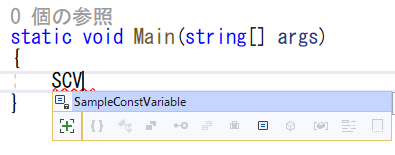
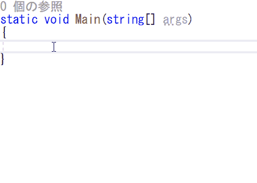

C# 命名規則など
C#では、変数名やクラス名の名前はわりと自由に付けることが可能です。大文字だろうが小文字だろうが、ビルドは通ります。しかし、一定の規則に則って命名することが推奨されます。
推奨された命名の規則を「命名規則」と呼びます。C#はMicrosoftが開発した言語なので、大枠はMicrosoftの方針に従うのが良いでしょう。
それでは、Microsoftが推奨する、C#の標準的な命名規則を学んでいきましょう。
C#の命名規則を学ぶ前に、命名規則の話をするときに頻出する単語を整理しておきましょう。
Pascal Case（パスカルケース）とは、先頭を大文字にし、単語の区切りも大文字にする方式です。
PascalCaseExample
Camel Case（キャメルケース）とは、先頭は小文字で始まり、単語の区切りのみ大文字にする方式です。
camelCaseExample
Camelとはラクダのことです。Camel Caseで書かれた文字列がラクダのコブのようにデコボコするので、こう呼ばれています。
Snake Case（スネークケース）とは、単語をアンダーバーで区切る方式です。小文字スネークケースと大文字スネークケースの両方がありえます。
snake_case_example
SNAKE_CASE_EXAMPLE
Snake CaseはC言語やC++でよく使われる形式ですが、C#では基本的に使いません。インテリセンス（Visual Studioの補完機能）との相性も悪いので、C#では使わないようにしましょう。
クラスの名前は、Pascal Caseで表します。
public class SampleClass
{
}
メソッドもPascal Caseで表します。
public void SampleMethod()
{
}
メソッドの命名方針
メソッドの名前は、基本的に英語の文法に則ります。
例えば、データを削除するメソッドだとしたらDeleteData()とします。DataDelete()とはしません。
このようにすることで、読みやすいプログラムになります。
何かを調べてbool型の結果を返却するメソッドはIs, Has, Canなどで始めることが多いです。
例えば、自身がアクティブかを調べるメソッドであればIsActive()、ジャンプ可能かどうかを調べるメソッドであればCanJump()などとします。
このようにすることで、プログラムが普通の英文に近くなり、読みやすくなります。
例：もしプレイヤーがジャンプ可能ならジャンプする処理
if (player.CanJump())
{
ジャンプ処理
}
※あ、でもC#の場合は、bool型の結果を返却するのはメソッドではなくプロパティのほうが適切なケースが多いですね。
フィールド（メンバー変数）の命名規則は、いくつかの派閥があります。プロジェクトの方針に従いましょう。
Microsoftの方針は、Camel Caseです。つまり、先頭小文字で単語の区切りを大文字にするものです。
private int sampleVariable;
ただし、この方針に則ると、例えばメソッドの引数と名前が被ってしまうことが多くなったりして、頻繁にthis.を使用する必要が出てきます。そのため、後述する方法を推奨する派閥もあります。
変数名をアンダーバーから始める方針です。
private int _sampleVariable;
こうすることで、一目でフィールドだと判別できたり、メソッドの引数の名前が被らなくなったりするなどのメリットがあります。
ちなみに、このように名前の先頭に付与する文字列のことをプレフィックス（接頭語）と呼びます。
アンダーバーを後ろに付ける派閥もあります。
private int sampleVariable_;
C++界隈では最近この方式が増えているらしい。
このように名前の末尾に付与する文字列のことをサフィックス（接尾語）と呼びます。
m_ を変数名の先頭に付けるという方針です。
private int m_sampleVariable;
mはMemberのMだと思う。
Unity社はこの派閥なんですよね。しかもm_大文字始まりっていう、ちょっと珍しいタイプです。
private int m_SampleVariable;
なので、本山はUnityでプログラムを書くときは、この方式で書きます。
メソッドの中で一時的に使う変数の名前は、Camel Caseにします。
public void SampleMethod()
{
int sampleVariable;
}
メソッドの引数名はCamel Caseにします。
public void SampleMethod(int sampleNumber, string sampleString)
{
}
引数名は変に省略せず、名前から意味が読み取れるようにしましょう。ここで下手に省略してしまうと、呼び出す人に混乱をもたらします。メソッドは使ってなんぼなので、使いづらくなってしまっては本末転倒です。
たまにアンダーバーなどを付けている学生がいますが、やめましょう。
変数名やメソッド名は省略しない
変数名やメソッド名を省略するのは、やめましょう。
例えば、GetAP()ではなくGetAttackPoint()としましょう。
昔は、ソースコードを紙に手書きで書いていたり、モニターが小さかったりしたため、短い名前が好まれましたが、現在ではそのような制約はありません。名前が長くても、Visual Studioが入力を補完してくれるため、デメリットはありません。
逆に、名前を省略して短くしてしまうと、意味が読み取れなくなってしまい、読みづらいプログラムになってしまいます。基本的に名前を省略するのはやめましょう。
例外として、もはや一般的となった略称だったり、極めて一時的な変数なのであれば、短い名前にしても良いでしょう。
列挙型の名前はPascal Caseにします。列挙値の名前もPascal Caseにします。
public enum State
{
Walk,
Jump,
HighJump,
Damage,
}
C++やJavaでは、列挙値を大文字スネークケースにすることが多いですが、C#ではPascal Caseにしましょう。
列挙値に列挙型名を含めるのは冗長なのでやめましょう。以下に例を示します。
public enum State
{
WalkState,
JumpState,
HighJumpState,
DamageState,
}
これは冗長なのでやめましょう。
定数の名前はPascal Caseにします。
public const int SampleConstantVariable = 100;
C++やJavaでは、大文字スネークケース（例：EXAMPLE_CONST_VALUE）にすることが多いですが、C#ではPascal Caseにしましょう。
C#ではほとんど見かけませんが、稀に定数を「k」から始める派閥があります（Unityの中のソースコードにもちょいちょいある…）。
kはドイツ語で定数を意味するkonstantの頭文字らしいです。
例：
public const int kSampleConstantVariable = 100;
C#のコーディングを行う際は、インテリセンス（Visual Studioの補完機能）を使いこなしましょう。
メソッド名や変数名などの先頭数文字を入力していくと、予測一覧が出てきますが、他のところをいじっていて予測が消えてしまったときはCtrl + Spaceで再度出すことができます。
メソッド名や変数名をPascal Caseで定義している場合、単語の頭文字だけを入力することで、爆速で候補を絞り込むことができます。
例えば、次のような定数があったとします。
const int SampleConstVariable = 100;
この場合、S, C, V と単語の頭文字だけを入力していくことで、SampleConstVariableを候補として絞り込むことができます。

最初は普通に入力していって、途中から頭文字のみの入力とすることもできます。
最初は普通に入力し始めたものの、似たような名前の定義がたくさんあってウゲ😨ってなったときにおすすめの入力法です。
このとき、頭文字を入力するのは大文字でなければいけないので（小文字では駄目）注意してください。
C#でプログラミングを行う際は、基本的に以上の方針を守りましょう。
ただし、細かい部分では、プロジェクトやチーム毎の違いがあると思われるので、そこの方針に従います。大切なのは、自分を貫くことではなく、周りに合わせることです。
命名規則に則るということは、最低限のルールを守ることです。重要なことですが、それだけでは、イケてる名前にはなりません。イケてる名前を付けてあげるには、以下の書籍がきっと役に立つでしょう。オススメです。これを読んだうえで就活作品を作ると、とても良いでしょう。
https://www.amazon.co.jp/dp/4873115655